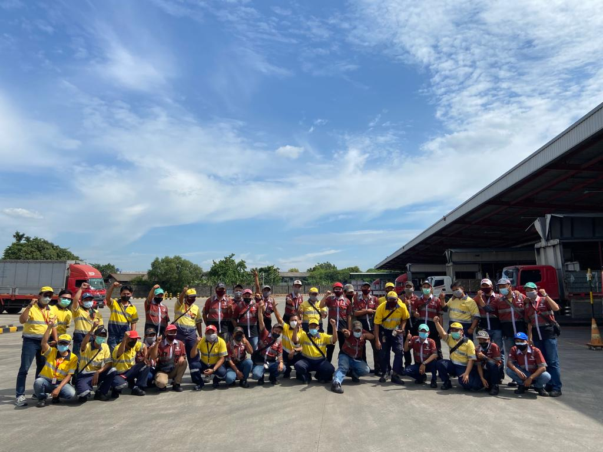

Andhyka Cakrabuana Adhitama
Inventory Control Specialist
Job Experience
I've been working at Coca-Cola Europacific Partner Indonesia since Sept 2019. I'm working as Inventory Control Specialist with attentive to details and ready for any inventory challenge. Supports recordkeeping goals by maintaining accurate, updated files on all SKUs. Diligent about cycle counts, random checks, and complete audits. Passionate leader with proven experience for small-big scale working environment. Analytical and critical thinker person with goals oriented mindset.
Skillsets
As Inventory Control Specialist i currently maintain skillsets like :
Also i took a course to learn programming language like Python and R with more focused at Data Science topics, and self-learning on Wordpress-based Website.
Education
At early 2019, i finished my Bachelor Degree at Universitas Diponegoro. I majored in Naval Technology, Faculty of Engineering with particular interest at Transportation stuff. After got my first job, i also use my spare time by taking Data Scientist course at dibimbing.id.
Organization Experience
I'm well-known on my campus as Coordinator Minister of Campus Harmonization, UNDIP Student Executive Board 2017. As a board director, i had responsibilities :
- Monitoring and evaluating board program to achieve vision and mission goals by implementing Key Performance Indicator for every program values.
- Coordinating O&HRD, Student Solidarity, and Student Welfare department to ensure synergistic and not overlapping in program execution.
- Leading 3 minister, 3 deputy minister, 9 section head, and more than 40 staff and senior staff from all department to collaborate in harmony and value oriented organization environment.
Portfolio
This is few of my latest project i've working on so far.
- Python
- R
- Website
Upcoming Project
© dhykac. All rights reserved. Design: HTML5 UP.